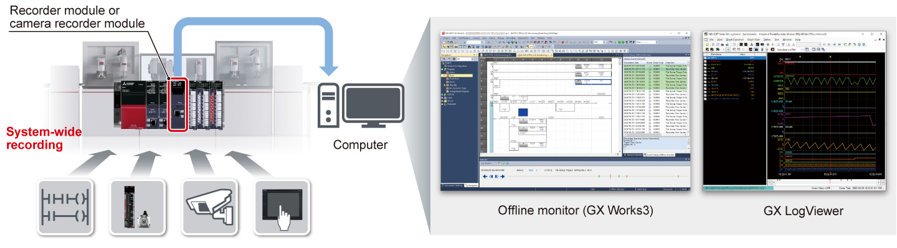

Controllers MELSEC iQ-R Series Product features -Advanced information-

Recorder module, Camera recorder module
The recorder and camera recorder modules are dedicated recording (logging) modules for system recording.
The modules can collect all device, label data, and event history per programmable controller scan prior to and after an error event together with a time-stamp.

RD81RC96
Recorder module
RD81RC96-CA
Camera recorder module
Features<sup>Quickly identify error cause when an error occurs</sup>
- Support error cause identification
- Minimal impact on downtime
- The modules enable extensive recording of information such as device data of the programmable controller and network camera images which is necessary for quickly identifying the root-cause of an error
- Recorded data can be analyzed in synchronization with the related programs, allowing easy identification of error causes by checking the relation between cause and effect
- By promptly investigating the actual cause, debugging time at equipment startup can be reduced and loss during system downtime can be minimized

Minimal impact on the scan time by filtering of devices and labels
- Minimal impact on the scan time
- Collect all device/label data prior to and after an error with a time-stamp
- If target devices/labels are decided, influence on the CPU scan time is minimized by filtering of devices and labels
Recording target data of each module
| Product name | Recording targets |
|---|---|
| Recorder module | All device logging data |
| Camera recorder module | All device logging data + video data |
Click here for details on corrective maintenance solutions using system recorder through the recorder module or camera recorder module.
Specifications<sup>Recorder module, camera recorder module specifications</sup>
| Item | RD81RC96 | RD81RC96-CA | |
|---|---|---|---|
| Recording target | Device/label, event history | Device/label, event history, video data | |
| Number of recording settings | Up to 4 | ||
| Recording method | File saving trigger only, recording startup trigger + file saving trigger | ||
| File saving trigger | Device of the control CPU module, (rise, fall, timeout), elapsed time after completion of data accumulation, control CPU module stop error |
Device of the control CPU module, (rise, fall, timeout), elapsed time after completion of data accumulation, control CPU module stop error, camera event |
|
| Recording startup trigger | Rise/fall (1 per recording setting) | ||
| Sampling method | Each scan, time specification, trigger instruction, safety cycle time | ||
| Number of connectable modules | One recorder module per control CPU | Four camera recorder modules per control CPU | |
| Applicable cameras*1 | Camera type | - | ONVIF® Profile S compliant network camera |
| Number of cameras | - | Max. 4 per module*2 | |
| Save destination | SD memory card, file server | ||
| Compatible CPU module | R04/08/16/32/120(EN)CPU, R08/16/32/120SFCPU*3 | ||
- *1.For details of compatible camera, please refer to the technical bulletin (FA‑A‑0326).
- *2.Up to two units can be connected when recording operation setting is set to “Main” and up to four units when set to “Sub”. For the number of connected network cameras and module configuration, please refer to the “MELSEC iQ-R System Recorder User's Manual (Application) (SH‑082281ENG).”
- *3.Compatible CPU modules can be checked from product information. Please refer to the “MELSEC iQ-R System Recorder User's Manual (Startup) (SH‑082279ENG).”